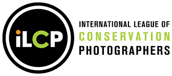

DanielBeltrá
Fotografías Concurso Contáctame
Sobre mí
Declaración del Artista
Biografía
Exhibiciones actuales
Curriculum
Links
Daniel es miembor de la International League of Conservation Photographers

Daniel es embajador de Zeis Camera Lenses
Daniel es co-fundador deMidshift Gear fabricantes de las mejores fundas para cámaras de exterior
Me inspira la belleza y la complejidad de la naturaleza. La fragilidad de nuestros ecosistemas es un tema recurrente en mi obra. Mis fotografías muestran la enorme transformación que sufre nuestro mundo a causa de las presiones generadas por el ser humano.
Para plasmar esto, suelo trabajar desde el aire, lo que facilita la yuxtaposición de la naturaleza con la destrucción causada por el desarrollo insostenible. La perspectiva única de la fotografía aérea ayuda a enfatizar que la Tierra y sus recursos son finitos.
Al mostrar imágenes de lugares remotos donde los intereses humanos y comerciales y la naturaleza están en conflicto, espero inculcar una apreciación más profunda por la naturaleza y una comprensión del precario equilibrio que nuestro estilo de vida ha impuesto al planeta.
Nacido en Madrid, España, Daniel Beltrá es un fotógrafo con residencia en Seattle, Washington. Su pasión por la conservación se evidencia en imágenes de nuestro entorno que resultan conmovedoras y evocadoras. Las fotografías de gran formato más impactantes de Beltrá son las tomadas desde el aire. Esta perspectiva ofrece al espectador un contexto más amplio de la belleza y la destrucción que presencia, además de revelar una sutil percepción de la escala. Tras dos meses fotografiando el derrame de petróleo de Deepwater Horizon en el Golfo de México, produjo numerosas imágenes visualmente impactantes de este desastre provocado por el hombre.
En las últimas dos décadas, el trabajo de Beltrá lo ha llevado a los siete continentes, incluyendo varias expediciones a la Amazonía brasileña, el Ártico, los océanos del sur y los campos de hielo patagónicos. Por su trabajo sobre el derrame de petróleo en el Golfo de México, en 2011 recibió el premio Fotógrafo de Vida Silvestre del Año y el Premio Lucie al Fotógrafo Internacional del Año - Perspectiva Profunda. Sus fotografías del derrame se exhibieron en todo el mundo, tanto de forma independiente como en el marco del Prix Pictet. En 2009, Beltrá recibió el prestigioso premio del Proyecto Selva Tropical del Príncipe, otorgado por el Príncipe Carlos. Otros logros destacados incluyen el premio de la Fundación BBVA en 2013 y el primer premio "Visión Global" de Pictures of the Year International en 2008. En 2006, 2007 y 2018 recibió premios de World Press Photo por su trabajo en la Amazonía. El trabajo de Daniel ha sido publicado por las publicaciones internacionales más destacadas, entre ellas The New Yorker, Time, Newsweek, The New York Times, Le Monde y El País, entre muchas otras.
Daniel Beltrá es miembro de la prestigiosa Liga Internacional de Fotógrafos de Conservación.
Proximas
The Amazon Rainforest: Beauty • Destruction • Hope. The Bruce Museum, Greenwich, Connecticut, June 19 - October 10, 2021